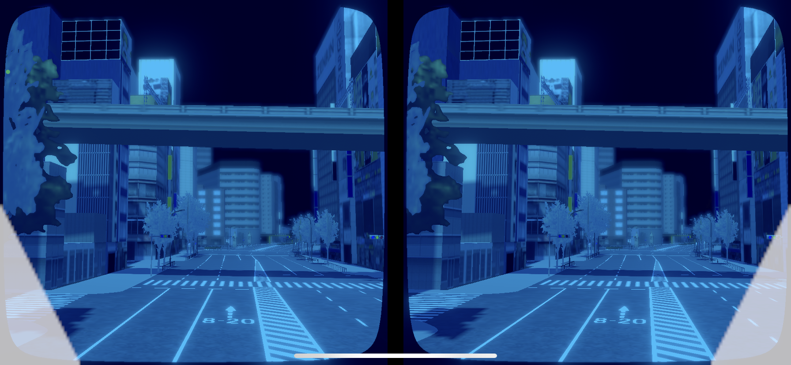

祝祭と霽れ
水没の都市
私は人のいない街が好きだ。夜になって人の動きが少なくなった街にこそ人の営みが感じられる。
私は水の中が好きだ。独特の静寂や、光のゆらめきが好ましい。
この作品は水没した都市のVR映像を水中で体験することで、水没した都市に人の営みを見出す試みである。
私は水の中が好きだ。独特の静寂や、光のゆらめきが好ましい。
この作品は水没した都市のVR映像を水中で体験することで、水没した都市に人の営みを見出す試みである。